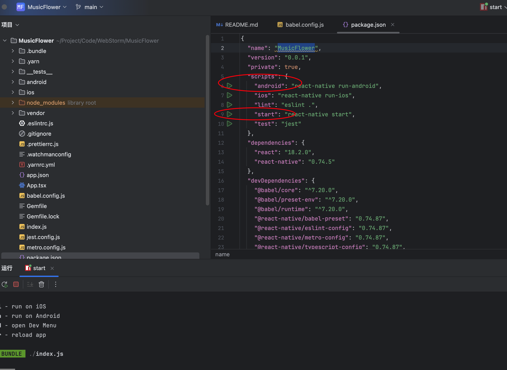

2024-08-11
项目环境搭建
修改于: 2024-08-11Mac下开发安卓APP
参考: https://reactnative.cn/docs/environment-setup
依赖安装
# brew install node@18
brew install node
brew install watchman # 由 Facebook 提供的监视文件系统变更的工具, 主要用于热更新
# 位置: /Library/Java/JavaVirtualMachines/zulu-17.jdk/Contents/Home
brew install --cask zulu@17
环境配置
最方便的方案是 安装 Android Studio, 因为会自动下载SDK以及相关包.
目前的最新支持的可下包是
- Android SDK Platform 34
- Intel x86 Atom_64 System Image（官方模拟器镜像文件，使用非官方模拟器不需要安装此组件）或是Google APIs ARM 64 v8a System Image（针对 Apple Silicon 系列机型）
配置 ANDROID_HOME 环境变量
React Native 需要通过环境变量来了解你的 Android SDK 装在什么路径，从而正常进行编译。
具体的做法是把下面的命令加入到 shell 的配置文件中。 如果你的 shell 是 zsh ，则配置文件为 ~/.zshrc ，如果是 bash 则为 ~/.bash_profile （可以使用 echo $0 命令查看你所使用的 shell 。）
# 如果你不是通过Android Studio安装的sdk，则其路径可能不同，请自行确定清楚
export ANDROID_HOME=$HOME/Library/Android/sdk
export PATH=$PATH:$ANDROID_HOME/emulator
export PATH=$PATH:$ANDROID_HOME/platform-tools
项目创建
$ npx react-native@latest init MusicFlower
✔ Initializing Git repository
Run instructions for Android:
• Have an Android emulator running (quickest way to get started), or a device connected.
• cd "~/Project/Code/WebStorm/MusicFlower" && npx react-native run-android
Run instructions for iOS:
• cd "~/Project/Code/WebStorm/MusicFlower"
• npx react-native run-ios
- or -
• Open MusicFlower/ios/MusicFlower.xcworkspace in Xcode or run "xed -b ios"
• Hit the Run button
Run instructions for macOS:
• See https://aka.ms/ReactNativeGuideMacOS for the latest up-to-date instructions.
创建好后可以不使用 Android Studio, 因为实际是前端项目, 我还是用的 WebStorm.
注解
不使用 Android Studio 有个好处是看不到一些依赖更新建议, 因为 Native 项目对新版本包不一定稳定支持
启动需要这两个都跑起来

- android 表示启动安卓模拟器
- start 表示将项目启动在端口, 以便模拟器加载.